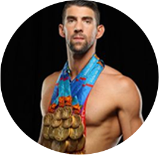

Perfis de 3 atletas que fizeram história nas Olimpíadas:

Michael Phelps ( EUA )
Conquistou trinta e sete recordes mundiais e conquistou o maior número de medalhas de ouro (oito) olímpicas em uma única edição

Larisa Latynina ( URS )
Conquistando um total de dezoito medalhas – sendo nove de ouro – que a tornaram a maior medalhista olímpica de todos os tempos por décadas. Até 2012, Michael Phelps superar sua marca

Nikolai Andrianov ( URS )
Nikolai detém o recorde do ginasta masculino que mais medalhas conquistou em Olimpíadas, somando um total de quinze.